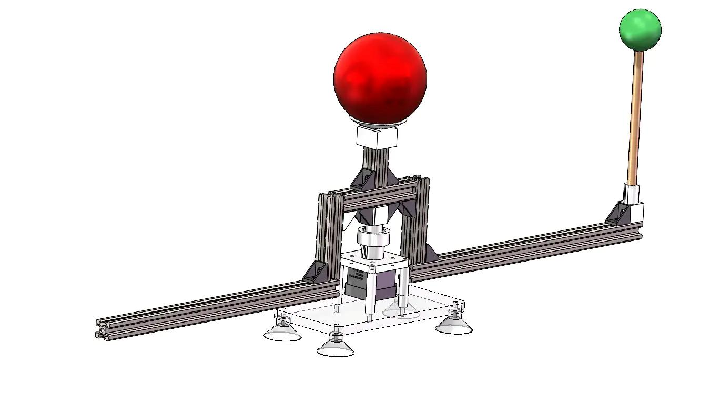
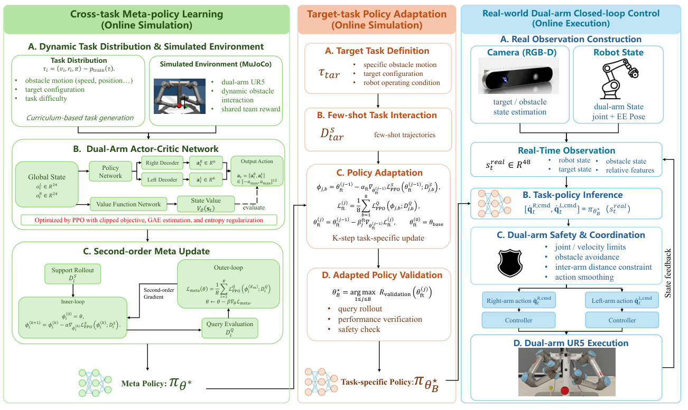
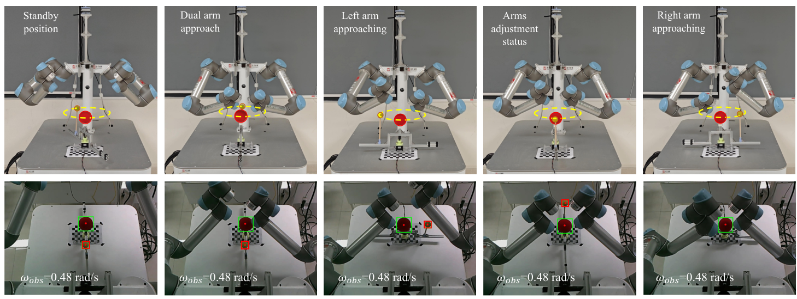
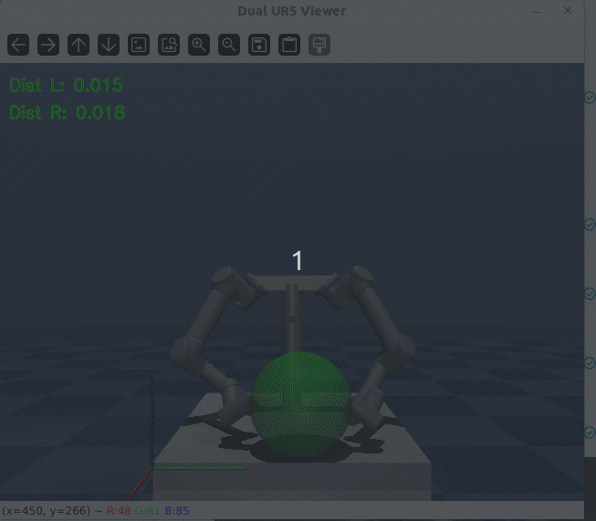
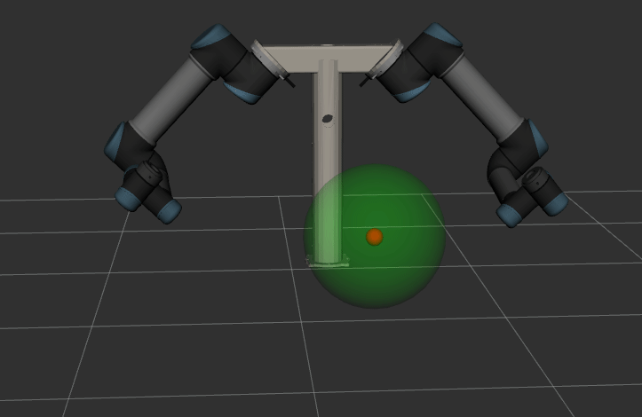

Meta-MARL / Dual-Arm Sim-to-Real
DM-NAV
双臂动态避障
与仿真到真实部署
Deployable Meta Multi-Agent Reinforcement Learning for Dual-Arm Dynamic Obstacle Avoidance
从变化的障碍物运动中学习可迁移的策略初始化，在目标任务中完成少量适应，再通过 RGB-D 感知与关节速度控制，将冻结策略部署到真实双 UR5 共享工作空间。
Simulation / Physical Demos
仿真与真机部署视频
从仿真环境中的双臂避障，到真实双 UR5 的外部执行与俯视感知。
点击各播放器的播放键后载入对应视频。仿真视频展示过程画面；定量结果见下方实验数据。
Research Question
动态障碍下的双臂协同
两台机械臂在同一工作空间内接近目标，既要避开运动障碍物，也要协调彼此的动作。障碍物的速度和时间变化规律会改变任务难度；DM-NAV 研究如何通过跨任务学习，让策略在有限交互预算内适应新的运动条件。
学习可适应的初始化
从不同障碍角速度与轨道半径的任务分布中元训练策略，通过目标任务的 support / query 轨迹进行少量梯度适应。
共享目标下协调双臂
采用两臂合作任务建模、臂专属随机策略和联合状态价值模型，以共享奖励学习接近目标与避障行为。
接入真实感知与控制
串联 RGB-D 三维定位、机器人状态反馈、冻结策略推理、速度命令整形和运行时保护，完成物理闭环验证。

Method / Three Stages
从元策略学习到冻结策略执行
- 01 / Meta-training
跨任务元训练
在 MuJoCo 中采样障碍运动任务。support 轨迹进行 1–3 次可微内循环更新，独立 query 轨迹构造外循环目标；保留内循环梯度图，执行二阶元更新。
输出：策略初始化与观测统计 - 02 / Task adaptation
目标任务适应
冻结观测统计，每轮收集 8 组独立 support / query 轨迹。比较 0、1、5、10 次预算；在每个预算内，依据固定验证种子选择检查点。
输出：验证选定的目标任务策略 - 03 / Physical transfer
冻结参数真机部署
RGB-D 感知与 UR5 反馈构建观测，两臂策略输出关节速度命令。物理测试使用前 10 次适应中验证选定的策略，执行期间保持参数冻结。
输出：感知、推理与速度控制闭环
机器人、目标、障碍物与相对状态
臂专属观测与双策略结构
左右臂共 12 维动作
裁剪目标、熵正则与二阶元更新

Experimental Results
仿真适应、基线对比与物理验证
指标沿用稿件定义。SR、SSR、SCR 分别展示；dobs 描述策略的运行位置，需要结合接近目标、碰撞和存活指标理解。
四种运动规律下的少量任务适应
保守与激进两种奖励配置，在 Slow、Fast、Sinusoidal、Random 任务下比较。下表节选严格成功指标 SR，单位为 %。
| 策略配置 | 运动任务 | 0 次适应 | 5 次预算 | 10 次预算 |
|---|---|---|---|---|
| 保守 | Slow | 31.8 ± 4.8 | 43.8 ± 1.3 | 47.1 ± 0.8 |
| Fast | 23.8 ± 6.6 | 37.1 ± 1.5 | 43.2 ± 0.9 | |
| Sinusoidal | 29.8 ± 5.3 | 42.6 ± 1.2 | 47.4 ± 0.7 | |
| Random | 27.6 ± 5.8 | 40.8 ± 1.4 | 48.0 ± 0.6 | |
| 激进 | Slow | 45.5 ± 5.7 | 62.5 ± 1.5 | 69.3 ± 0.9 |
| Fast | 37.2 ± 7.9 | 55.8 ± 1.8 | 65.4 ± 1.1 | |
| Sinusoidal | 43.3 ± 6.3 | 61.2 ± 1.6 | 69.1 ± 0.9 | |
| Random | 41.2 ± 7.0 | 59.2 ± 1.7 | 69.7 ± 1.0 |
平均 SR 提升：保守配置 28.3% → 41.1% → 46.4%；激进配置 41.8% → 59.7% → 68.4%。10 次预算下，所有策略与任务组合均记录 SSR = 99.4%、SCR = 0.0%。
接近与间距：10 次预算下，激进配置平均更接近目标约 9.5 mm；保守配置平均保留更多末端障碍间距约 10.5 mm。两种配置的初始检查点选择规则不同，该结果反映运行位置差异。
5 次与 10 次预算均报告预算内的最佳验证检查点，曲线改善代表更大适应与选择预算的收益。表中标准差来自同一策略的评估轨迹，独立训练种子的重复验证仍待补充。
与六种 MARL 基线的系统对比
名义正弦运动为 0.20–0.40 rad/s，高速正弦运动为 0.68–0.88 rad/s。下表节选 SR 与存活率，均以 % 表示；存活率衡量完成 20,000 步测试时域的情况。
| 方法 | 名义运动 SR | 高速运动 SR | 名义运动存活率 | 高速运动存活率 |
|---|---|---|---|---|
| DDPG | 8.5 ± 5.2 | 4.1 ± 3.1 | 66.203 ± 28.407 | 54.171 ± 29.534 |
| DADDPG | 14.2 ± 7.1 | 7.3 ± 4.4 | 77.412 ± 21.134 | 64.814 ± 25.542 |
| DQN | 3.8 ± 2.9 | 1.5 ± 1.4 | 49.324 ± 27.562 | 37.733 ± 21.866 |
| TDQN | 6.7 ± 4.1 | 2.8 ± 2.2 | 58.684 ± 24.826 | 45.936 ± 22.643 |
| AC | 2.1 ± 1.8 | 0.8 ± 0.9 | 37.108 ± 15.925 | 28.074 ± 13.707 |
| PPO | 26.8 ± 9.6 | 15.6 ± 7.4 | 92.134 ± 13.818 | 84.362 ± 17.131 |
| DM-NAV · 保守 | 78.3 ± 0.6 | 40.4 ± 0.0 | 100.000 ± 0.000 | 100.000 ± 0.000 |
DM-NAV 在两个条件下均记录 SSR = 99.4%、SCR = 0.0%。基线预训练为 4,000 epochs，DM-NAV 为 400 个元训练 epochs、任务 batch size = 8；训练、交互预算与控制链路不同，因此结果支持完整系统的对比，元学习自身的贡献还需匹配预算与接口的消融验证。
真实双 UR5：14 种运动条件
使用前 10 次仿真适应中验证选定的策略，物理执行期间无梯度更新。七种恒速条件与七种正弦条件分别报告，SR、SSR、SCR 单位为 %，距离单位为 m。
| 运动类型 | 速度 / 条件标签 | SR ↑ | SSR ↑ | SCR ↓ | dtar ↓ | dobs |
|---|---|---|---|---|---|---|
| 恒速 | 0.18 | 38.0 | 99.4 | 0.0 | 0.118 | 0.265 |
| 0.28 | 40.6 | 99.4 | 0.0 | 0.117 | 0.262 | |
| 0.38 | 41.2 | 99.4 | 0.0 | 0.116 | 0.259 | |
| 0.48 | 46.1 | 99.4 | 0.0 | 0.114 | 0.258 | |
| 0.58 | 47.9 | 99.4 | 0.0 | 0.115 | 0.258 | |
| 0.68 | 49.1 | 99.4 | 0.0 | 0.115 | 0.257 | |
| 0.78 | 47.2 | 99.4 | 0.0 | 0.116 | 0.257 | |
| 正弦 | 0.18 | 24.5 | 99.4 | 0.0 | 0.119 | 0.270 |
| 0.28 | 51.1 | 99.4 | 0.0 | 0.117 | 0.259 | |
| 0.38 | 44.0 | 99.4 | 0.0 | 0.116 | 0.260 | |
| 0.48 | 46.1 | 99.4 | 0.0 | 0.115 | 0.258 | |
| 0.58 | 45.1 | 99.4 | 0.0 | 0.115 | 0.258 | |
| 0.68 | 48.2 | 99.4 | 0.0 | 0.115 | 0.257 | |
| 0.78 | 46.9 | 99.4 | 0.0 | 0.116 | 0.257 |
恒速行的标签是命令角速度（rad/s）；正弦行沿用实验记录的条件标识，实际角速度随时间变化。相邻控制步存在相关性，每个条件仅有一段连续记录，独立重复试验与可靠性置信区间仍待补充。
Physical Closed-loop Execution
感知、速度控制与运行时保护
RGB-D 三维状态估计
YOLO 定位目标与障碍球，结合 HSV 掩膜、连通域与深度门控提取中位深度。相机内参完成反投影，eye-to-hand 变换将坐标对齐到世界系，再进行球心修正、平滑和跳变保护。
3 × 4 ArUco GridBoard，15 个保留姿态；记录的平移与旋转残差约为 0.016 m、0.015 rad。目标和障碍状态通过 ROS 2 / TF 与机器人反馈合并。
50 Hz 策略与 100 Hz 看门狗
两臂分别输出 6 维关节速度动作，经过裁剪、低通滤波、速度死区与速度 / 加速度 / jerk 限制后执行。启动时保持零速度 2 s，再逐渐混入策略命令。
默认速度上限 0.08 rad/s，死区 0.001 rad/s。看门狗每 0.01 s 重发有效命令；0.10 s 内无新有效命令时持续发布零速度。UR 内部伺服频率由控制器与控制柜决定。
反馈检查与碰撞影子模型
检查关节反馈的新鲜度与数值有效性、跟踪误差、实测关节速度和 UR speed scaling。MuJoCo 影子模型检查障碍接触、臂间距离和地面接触；第二套运行包每个策略周期预测前方 0.02 s。
预测接触时发送零关节速度、停止障碍电机并进入错误状态。MoveIt / ROS 2 用于平台调试与坐标验证，稿件中的在线策略运行采用关节速度接口。
MuJoCo 3.1.6 使用 RK4、0.002 s 物理步长，每个策略动作执行两步物理积分。正式仿真测试为 20,000 步，约 80 s；真机测试在 50 Hz 下同为 20,000 步，约 400 s。

结果适用范围与后续验证
当前结果支持所测试固定几何与障碍运动条件下的系统部署。后续将补充完整训练的独立种子、统一检查点选择规则、匹配基线接口与计算预算，并进行重复物理试验及置信区间报告。
在线速度分支仍需补充针对真实关节上下限的逐关节预测制动；模型场景模式按照设定轨迹检查障碍，真实装置偏离轨迹时存在观测边界。软件停机通过零速度命令和障碍电机停止实现，物理急停由示教器及硬件安全回路承担。
Dual_Arm_UR5 / Engineering Foundation
双臂平台与公开工程基础
Dual_Arm_UR5 为这条研究主线提供了建模、训练与真机部署基础。公开仓库保留 Base、RL-Algorithm、Sim-To-Real 三条工程分支；DM-NAV 的方法、实验协议与具体部署参数以在投稿件为准。

